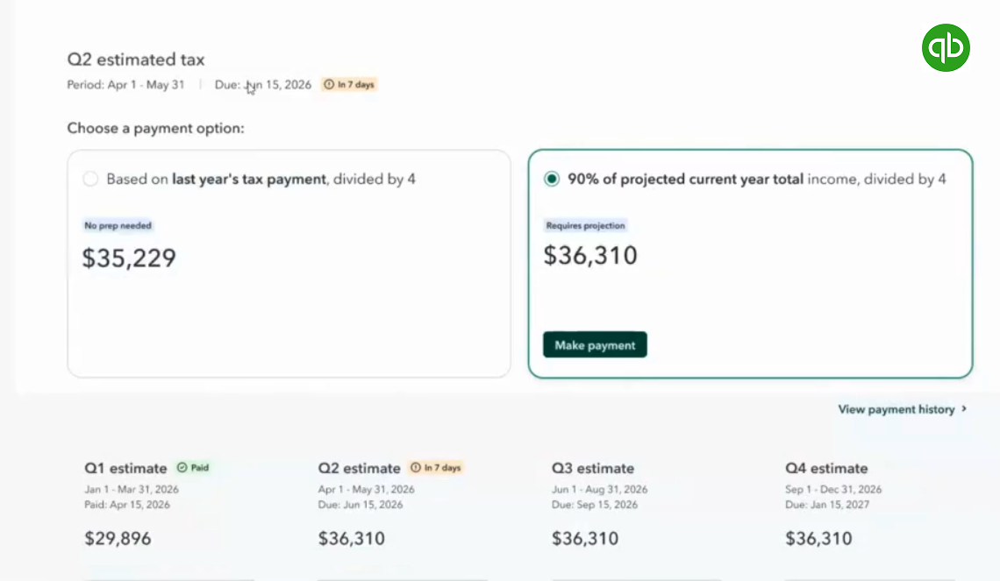

Project
Intuit QuickBooks US Business Tax – Self-employed Payments
The customer problem
In the United States, sole proprietors must make four tax payments to the IRS (Internal Revenue Service) throughout the year.
Working out these payments is confusing and stressful. If they get it wrong and don't pay enough tax, they could pay penalties. But they don't want to pay too much either, because that reduces their cashflow.
Our new product aimed to simplify the calculations for customers.
The challenge
When the UX designer presented early designs, users were confused and angry about the word "quarterly", because the four payment periods aren't every three months.
What I did
- Researched what the IRS called these payment periods.
- Persuaded our Brand Marketing partner to change the new product name, based on my findings, user reactions and Intuit's content guidelines.
- Persuaded the Product Manager to lead with actual dates. I explained that "quarterly" violated users' mental model of four equal periods. Sole proprietors reacted so strongly because they're managing tight cashflows and thinking in real calendar months.
Outcome
The Brand team renamed the product from Quarterly Tax Estimates to Tax Estimates.